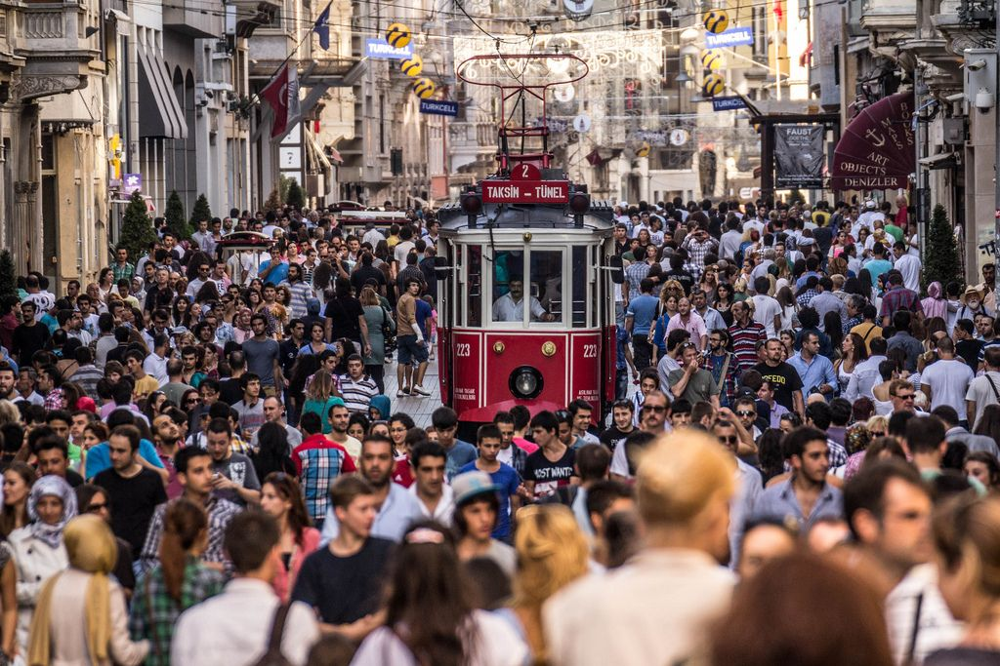
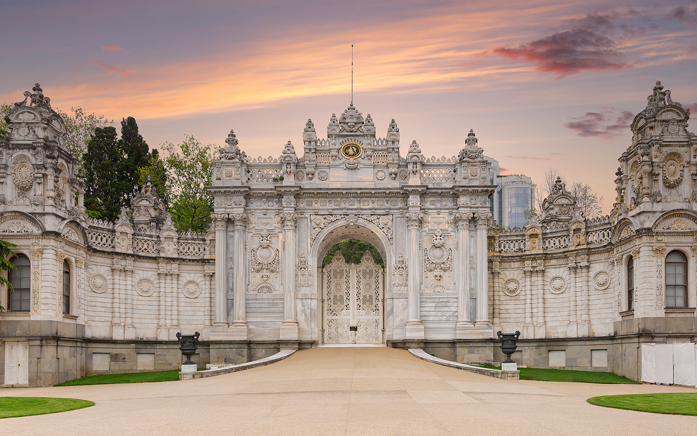
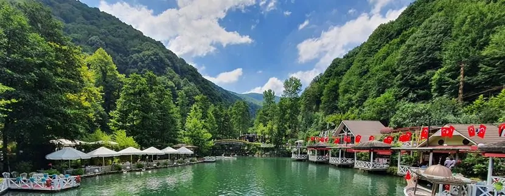

Neighborhoods
Sultanahmet (Old City)
The historic core. All the famous Byzantine and Ottoman sights. Heavy with tourists but unavoidable — and worth it. Stay 2 full days minimum.
- Haghia Sophia [map] — Byzantine church turned mosque. Vast domed interior. No photos during prayer.
- Blue Mosque (Sultanahmet Camii) [map] — 20,000+ blue İznik tiles. Five minarets. Genuinely beautiful.
- Basilica Cistern [map] — underground Roman water reservoir. Eerie, dim, cool. Medusa heads under pillars.
- Hippodrome [map] — ancient chariot racing arena, now a park. Egyptian Obelisk (1600 BCE) still standing.
- Topkapı Palace [map] — main Ottoman imperial palace. Harem worth the extra ticket.
- Museum of Turkish and Islamic Art — underrated, excellent carpets and calligraphy.
- Sokollu Mehmet Paşa Camii — quiet Sinan-designed mosque off the main drag. Exquisite.
- Archeology Museum — good collection, usually not crowded.
Getting there: Tram T1 to Sultanahmet stop.
Eating: Tarihi Sultanahmet Köftecisi (meatballs since 1920), Hafız Mustafa (sweets since 1864), Doyum (kebabs).
Sirkeci & Eminönü
Gateway to the old city, waterfront chaos, bazaar sprawl. Best for street food and transit.
- Galata Bridge [map] — cross it on foot at least once. Fishermen dangle lines off the sides.
- Egyptian Bazaar (Spice Bazaar) [**] [map] — 400-year-old market. Spices, Turkish delight, nuts. Best for spices and teas. Open 10am–7pm.

Egyptian Bazaar — spices, teas, and lokum since 1660
- Yeni Camii — 17th-century mosque right on the waterfront. Pigeons everywhere.
- Balık ekmek boats — grilled fish sandwiches sold off moored boats.
- Rüstem Paşa Camii (Tahtakale) — small mosque with exceptional İznik tiles, usually uncrowded. Worth finding.
Getting there: Tram T1 to Eminönü.
The Grand Bazaar Area [**]
4,000+ shops under one roof. The world's largest covered market. Physically overwhelming the first time. Closed Sunday. Bargain — start at 50% of asking price.
- Grand Bazaar (Kapalıçarşı) [map] — leather, jewelry, ceramics, textiles. Go deep into the less-touristed sections.
- Çemberlitaş Hamamı [map] — classic Ottoman bathhouse, 1584. Good introduction to hamam culture.
- Beyazıt Meydanı — main square outside the bazaar, booksellers around the edges.
- Aqueduct of Valens — Roman aqueduct still standing over a busy boulevard.
- Column of Constantine — ancient column in the middle of the road. Easy to miss.
Getting there: Tram T1 to Beyazıt-Kapalıçarşı.
Eating: Street food (simit, chestnuts, pickle juice vendors). Pandeli (above Spice Bazaar entrance). Hamdi Restaurant for kebabs with views.
Galata & Karaköy
Gentrified waterfront area north of the bridge. Good coffee, good food, galleries. Galata Tower dominates the hill.
- Galata Tower [d] [map] — 360° city views from medieval Genoese watchtower. €40 entry. Queue or book ahead.

Galata Tower — Genoese watchtower, built 1348
- Kamondo Steps — curved Art Nouveau staircase. Heavily photographed.
- Galata Mevlevihanesi — Sufi lodge and museum, former home of the Whirling Dervishes.
- Tünel — one of the world's oldest underground railways (1875), 90 seconds from Karaköy to Beyoğlu.
- Jewish Museum — in Zülfaris Synagogue, good overview of Istanbul's Jewish history.
- Arap Camii — former Genoese church converted to mosque. Unusual rectangular plan.
Getting there: Tram T1 to Karaköy.
Eating: Karaköy Güllüoğlu (baklava), Namli Gurme (deli), Karaköy Lokantası.
Beyoğlu, Taksim & Around
The modern city's social hub. İstiklal Caddesi is the main pedestrian artery. Bars, restaurants, clubs in every direction.
- İstiklal Caddesi — pedestrian boulevard, 1.4km. Nostalgic tram runs through it.

İstiklal Caddesi — the nostalgic tram and the crowds
- Asmalımescit / Nevizade — the meyhane district. Best evening destination.
- Museum of Innocence — Orhan Pamuk's literary museum. Small, quirky, excellent.
- Pera Museum — good rotating exhibitions, Orientalist paintings collection.
- Military Museum — Mehter (Ottoman military band) performances daily.
- Nişantaşı — upscale shopping district north of Taksim.
- Dolmabahçe Palace [d] [map] — Turkey's largest palace, world's largest ballroom. ~€6. 2–3 hours. On the Bosphorus waterfront. Free alternative: just walk the gardens and view the entrance archways.

Dolmabahçe Palace — the Imperial Gate on the Bosphorus
Getting there: Metro M2 to Taksim. Funicular F1 from Kabataş.
Eating: Mikla (fine dining, roof), 360 Istanbul (rooftop views), Refik (classic meyhane), Nevizade Sokak (meyhane strip).
The Bosphorus
The strait dividing Europe from Asia. Best seen from the water.
- Bosphorus Cruise — public ferries go to Anadolu Kavağı and back (cheapest option). Tourist boats offer shorter versions.

Bosphorus — Europe on the left, Asia on the right
- Ortaköy [d] [map] — Waterside mosque open to non-Muslims, gorgeous ceiling, free entry, photos allowed. Plus kumpir (loaded baked potato) stands outside.
- Bebek [map] — upscale neighborhood, good cafés, seafood restaurants.
- Rumeli Hisarı [map] — Ottoman fortress built in 4 months to blockade Constantinople (1452). Walk the walls.

Rumeli Hisarı — built 1452 in four months, on the Bosphorus
Getting there: Ferries from Eminönü, Beşiktaş, Üsküdar. Bus 25T from Taksim to Sarıyer.
Eating: Bebek Balıkçısı (seafood), Rumeli Hisarı İskele (fish by the fortress), Ortaköy kumpir stands.
The Land Walls
Theodosian walls (413 CE) stretch 6.5km from Sea of Marmara to Golden Horn. Kept the city safe for 1000 years until 1453.
- Kariye Museum (Chora Church) [map] — stunning Byzantine mosaics. Best example in Istanbul.
- Yedikule Museum [map] — fortress at the southern end. Climb the towers.
- Balat & Fener [*] [map] — Colorful houses, antique shopping, Church of St. George. Old Jewish and Greek neighborhoods. Combine with Kariye Museum nearby.
- Eyüp [map] — sacred Muslim neighborhood at the Golden Horn end. Eyüp Sultan Mosque and cemetery.
- Pierre Loti Café [map] — hilltop tea garden above Eyüp cemetery. Cable car or walk up.
Getting there: Bus 80T from Eminönü to Edirnekapı.
Eating: Siirt Şeref Büryan (Kurdish lamb tandır), Vefa Bozacısı (historic boza café since 1876).
Asian Side (Üsküdar, Kadıköy) [***]
Take the ferry — it's part of the experience. Feels more local, less touristy than the European side. Mom and Anna both rate this as essential — half day minimum.
- Kadıköy — best food market in the city. Excellent restaurants, cafés, nightlife.
- Çiya Sofrası [map] — reason enough to cross the Bosphorus. Regional Anatolian cuisine.
- Maiden's Tower (Kız Kulesi) [map] — small tower on an islet offshore. More atmospheric from distance.
- Üsküdar [map] — quieter, more traditional. Ottoman mosques on the waterfront.
- Şemsi Paşa Camii [map] — Sinan-designed (1580), beautifully situated on the Üsküdar waterfront.
- Haydarpaşa Station [map] — grand 1908 German-built terminus. Closed but beautiful from outside.
Getting there: Ferry from Eminönü or Karaköy to Kadıköy or Üsküdar. Marmaray under the Bosphorus from Sirkeci.
Eating: Çiya Sofrası (exceptional), Kadıköy Market street food, Moda cafés.
Princes' Islands
Island chain 20km southeast. No cars. Day trip or weekend escape. Nine islands; Büyükada is the largest.
- Büyükada — biggest island. Rent bikes or take horse carriage. Victorian-era mansions.
- Aya Yorgi Monastery — hilltop monastery on Büyükada. Walk or take carriage (long tour).
- Heybeliada — quieter, good for walking.
Getting there: Ferry from Kabataş or Kadıköy (~1 hour). Faster sea bus from Kabataş.
Eating: Elastic Maraş-style ice cream everywhere. Fish restaurants on the Büyükada waterfront.
Day Trips [d]
Recommended by your Anna's research.
- Anadolu Kavağı — Where the Bosphorus meets the Black Sea. Quiet fishing village, very different from the tourist core. Seafood restaurants, Yoros Castle (hilltop ruin, panoramic Black Sea views), colorful houses. Take the public ferry from Eminönü — the ride itself is half the experience.
- Bursa (full day) — First capital of the Ottoman Empire, 2 hours by ferry + bus. Grand mosques, bazaars, Uludağ Mountain cable car. Best in spring or autumn.

Bursa — green hills and Ottoman architecture, 2 hours from Istanbul
Getting there: Both via ferry from Eminönü. Bursa requires ferry to Yalova or Mudanya + onward bus.
Orientation
- The Bosphorus runs N–S, dividing the city. Ferries are the best way to cross.
- Galata Bridge (Karaköy ↔ Eminönü) is a walkable crossing.
- Sultanahmet sits on a peninsula (water on 3 sides) — you can walk its edges easily.
- Budget 2–3 days for European side core sights. Half day for Asian side.